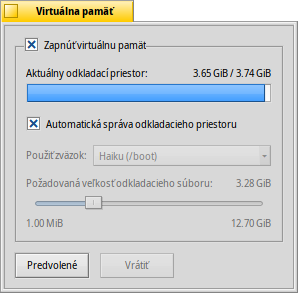

Slovenčina
Slovenčina Français
Français Deutsch
Deutsch Italiano
Italiano Русский
Русский Español
Español Svenska
Svenska 日本語
日本語 Українська
Українська 中文 ［中文］
中文 ［中文］ Português
Português Suomi
Suomi Magyar
Magyar Português (Brazil)
Português (Brazil) English
English Virtuálna pamäť
Virtuálna pamäť
| Panel: | ||
| Umiestnenie: | /boot/system/preferences/VirtualMemory | |
| Nastavenia: | ~/config/settings/kernel/drivers/virtual_memory ~/config/settings/VM_data - Ukladá pozíciu okna panela. |
Virtuálna pamäť umožňuje systému odkladať pamäť na pevný disk, ak sa dá RAM využiť na zmysluplnejšie veci. Takže aj keď máte veľa RAM, poskytnutie virtuálnej pamäte nikdy neuškodí.
Ak potrebujete, môžete nastaviť veľkosť aj na väčšiu, aká je veľkosť vašej fyzickej pamäte. S dnešnými veľkými pevnými diskami by nemalo byť nastavenie veľkosti fyzickej pamäte problémom. Vždy môžete veľkosť virtuálnej pamäte zmenšiť, ak by ste mali nedostatok voľného miesta. V tom prípade by ste sa mali pozrieť na Využitie disku, ak chcete zistiť, čo vám zaberá toľko miesta.
Normálne je odkladací súbor zapísaný na vašej zavádzacej oblasti. Ak je váš disk často vyťažený kvôli virtuálnej pamäti, ktorá neustále vymieňa dáta s fyzickou pamäťou, môžete skúsiť použiť samostatný pevný disk pre váš odkladací súbor. Iba ďalšia disková oblasť na tom istom pevnom disku s vaším systémom/dátami nepostačí.
Najefektívnejšie by samozrejme bolo rozšíriť RAM...
| obnoví všetky hodnoty na predvolené. | ||
| obnoví nastavenia, ktoré boli aktívne, keď ste spustili nastavenia Virtuálnej pamäte. |